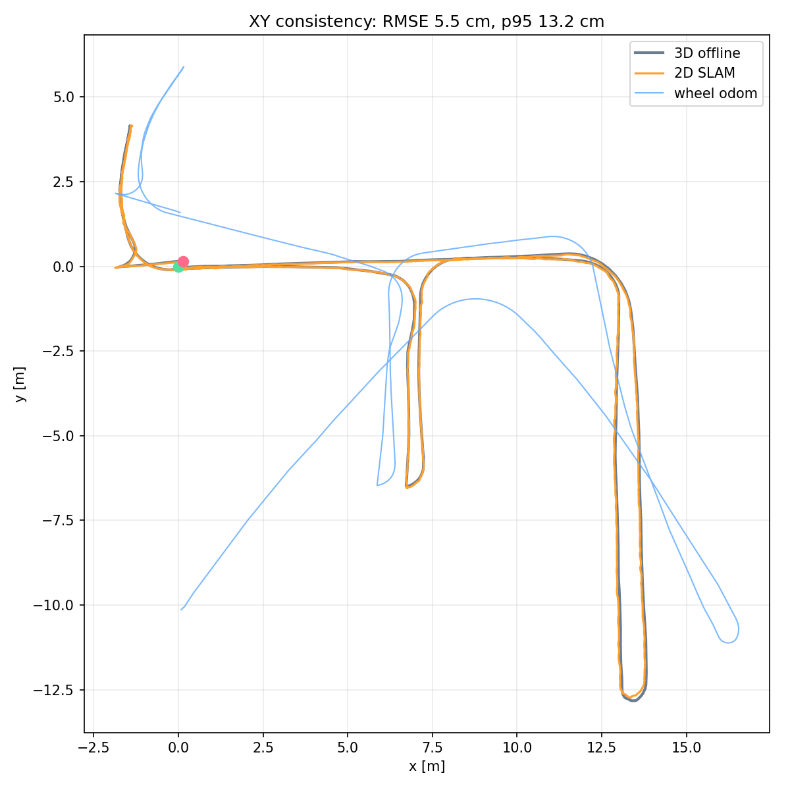
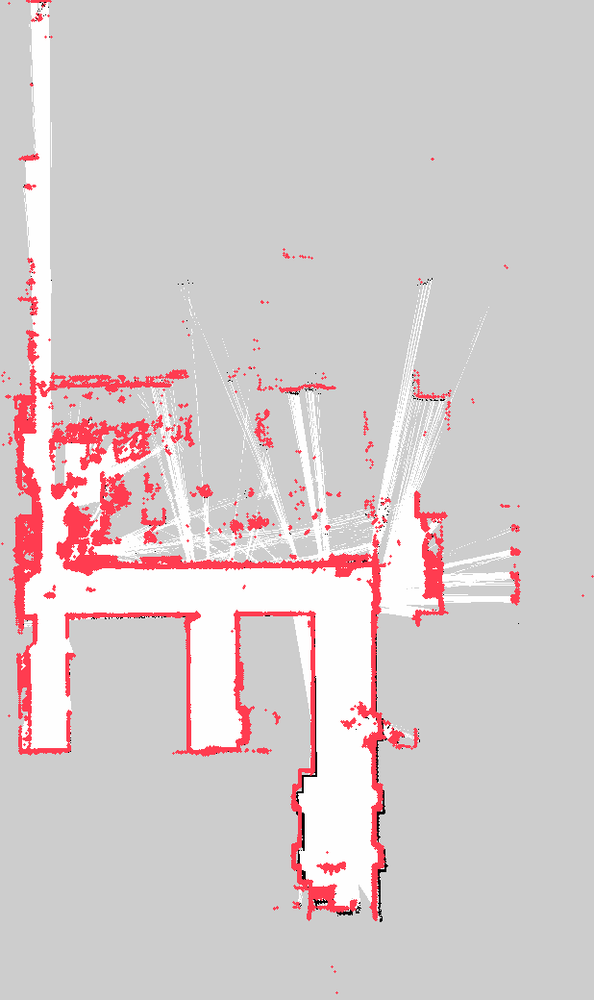

2D 占有格子
0.050 m
map_slam.pgm / 1440 poses / 全体 30.9 × 52.0 m / 表示は経路±8m
3D 地図点数
411,471
表示は318,403点にクロップ / 床p95 4.5 cm / DUFOMap 18,453点除去
再計算前LIO 3D
23.8 cm
Z range / 床p95 6.1 cm / DUFOMap なし
2D vs 3D XY
5.5 cm
RMSE / 中央値 3.4 cm / p95 13.2 cm
3D ループ残差
3.3 cm
p95 / 平均 1.3 cm / max 10.8 cm
壁の2D↔3D距離
3.7 cm
3D壁→2D占有セル中央値 / p95 26.1 cm


XY 整合性チェック

2D軌跡を3D軌跡へ剛体アライメント。灰=3D、橙=2D、青=車輪odom（手押しのため参考）。

2D占有格子に3D壁点（赤）を投影。位置合わせは軌跡の剛体変換。
| 指標 | 値 | 意味 |
|---|---|---|
| 2D vs 3D XY RMSE | 5.5 cm | 軌跡形状の一致（剛体アライメント後） |
| 2D vs 3D XY p95 | 13.2 cm | 大きいズレの95%値 |
| 2D vs 3D XY max | 18.8 cm | 最大ズレ |
| 開始→終了の距離（2D） | 17.3 cm | ループの閉じ残り（同一地点に戻った場合） |
| 開始→終了の距離（3D） | 21.0 cm | 同上 |
| 3Dループ残差 p95 | 3.3 cm | 3D最適化のループ整合（自己整合） |
| 3D壁→2D地図 中央値 / p95 | 3.7 / 26.1 cm | 3D壁点から最寄り2D占有セル |
| 2D地図→3D壁 中央値 / p95 | 1.7 / 15.5 cm | 2D占有セルから最寄り3D壁点 |
絶対精度の真値ではありません。XYは「2Dと3Dの相互整合」「ループ/開始終了」「壁の最近傍」による検証です。車輪odomは手押しのため比較対象外（参考値 RMSE 3.3 m）。
3Dの既知床補正は「屋内床が単一平面」という明示的な仮定です。実機のFAST-LIO設定・既存地図は変更していません。
BAG: mapping_all_real_20261022_194816 / 2D: SLAM Toolbox / 3D: offline FAST-LIO + DUFOMap + known-floor。